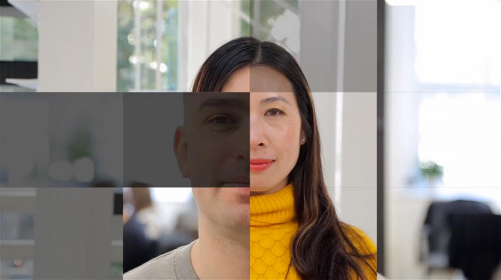

2016 has been a difficult year. From East to West, campaigns of fear have gathered momentum, resulting in economic uncertainty and extreme social division.
At Eight Inc. we believe our strength comes from our diversity. As the year draws to a close we wanted to honour this by creating 'The Mighty We’, a short film that sends a message to 2017; one of hope, progress, and most of all, love.

We are using the film to raise awareness, and $2,500, for the UNHCR Syria winter emergency fund, which is helping the many displaced Syrians across the Middle East survive the winter.
With thanks to Pete Kirby for the beautiful words, Arcade Fire for the beautiful score, and everyone at Eight Inc. for the beautiful thought (and faces).
SOURCE: The Mighty We